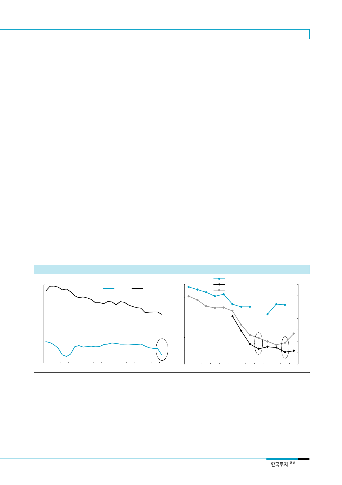

삼성카드(029780)
II. 수익성 악화 폭 그리 크지 않아
소득 주도 성장과 포용적
금융으로 카드사 수익성은
압박
1. 불가피한 수익성 악화 압력
정부의 ‘소득 주도 성장’과 ‘포용적 금융’이라는 정책 방향성으로 인해 가맹점수수료 및 카드
론 금리 인하 압박이 지속되고 있다. 정부 입장에서는 최저임금 인상으로 인한 중소/영세가
맹점의 인건비 부담 증가와 금리인상으로 인한 서민금융 이용자들의 이자비용 부담 및 금융
시스템 건전성을 동시에 고려해야 하기 때문이다.
가맹점수수료율 하락은
불가피
카드사의 가맹점수수료는 대손비용, 조달비용, VAN수수료, 마케팅비용, 일반관리비용 등 적
격 비용을 기반으로 산출되며, 2016년 업종 평균(신용카드 개인)은 2.09%였다. 다만 중소/
영세가맹점은 2012년부터 적격비용에 상관없이 특정 요율의 가맹점수수료가 부과됐다. 특히
올해 8월부터 중소/영세 가맹점수수료가 각각 1.3%(기존 2.0%), 0.8%(기존 1.5%)로 낮아지
면서 5bp 내외의 가맹점수수료율 하락이 발생한 것으로 추정된다. 가맹점수수료율은 3년 주
기로 재산정되는데 2019년 1월부터 새롭게 적용될 수수료율은 최근 3년간의 대손비용과 조
달비용 감소를 고려하면 하락할 가능성이 높다. 과거 수수료율 재산정 시기였던 2013년과
2016년에 삼성카드의 수수료율(전체 신판 기준)은 전년대비 모두 7bp 하락한 바 있다. 2019
년에도 7~10bp 내외의 수수료율 하락을 전망한다.
카드론과 현금서비스
수익률도 일부 하락
한편 올해 3분기 기준 삼성카드의 카드론 및 현금서비스의 평균 수익률은 각각 14.3%,
19.9%이다. 금감원 주도로 카드론 금리체계 점검이 이루어지고 있는데 이르면 내년 상반기
에 평균금리가 1%p 하락하는 것으로 추정했다. 한편 삼성카드의 현금서비스 금리는 현재
6.4~26.4%인데 내년부터 법정 최고금리가 27.9%에서 24%로 인하됨에 따라 일부 이자수
익 감소가 불가피하다.
[그림 1] 삼성카드의 카드론 및 현금서비스 평균 수익률
(%)
24
22
카드론
현금서비스
20
18
카드론 평균금리 18년 1%p 인하 가정
16
14
[그림 2] 평균 가맹점수수료율 및 개인 신판 취급액 비중
(%)
2.4
2.2
업종 평균 수수료율(개인 신용카드, 좌)
삼성카드 수수료율(전체, 좌)
삼성카드 개인 신판 취급액 비중(우)
(%)
95
90
85
2.0
80
1.8
75
1.6
70
1.4
65
12
1Q11
1Q12
1Q13
1Q14
1Q15
1Q16
1Q17 1Q18F
1.2
60
2005 2006 2007 2008 2009 2010 2011 2012 2013 2014 2015 2016 3Q17
주: 1. 현재 삼성카드 카드론 및 현금서비스 금리는 각각 5.9~23.9%, 6.4~26.4%
2. 법정 최고금리 인하(27.9%→24.0%)로 현금서비스 최고금리 인하 예정
자료: 삼성카드, 한국투자증권
주: 개인 취급액 비중은 개인/(개인+법인)
자료: 금융위원회, 여신금융협회, 금융통계정보시스템, 한국투자증권
3